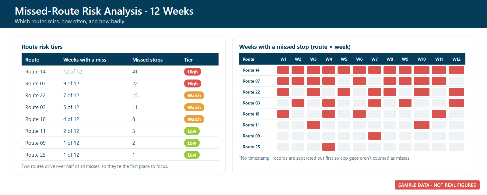

Delivery QA
Reporting Pipeline
I turned messy weekly delivery exports into a report leadership can trust, the same way every week. Then I used the same data to find which routes keep missing deliveries.
- Python
- Excel
- Power BI
- Power Query
- Power Automate
- PowerPoint
- JavaScript
This is a case study only. Figures in the text are rounded. Every image uses made-up sample data, and no client or route information is shown.
The problem
Every week, the delivery team exports records for thousands of scheduled meal stops from the case management system. Those exports are inconsistent:
- Column names change from week to week. The same status column shows up under three different names.
- Categories drift. New reasons appear, and the same reason is spelled two ways.
- Some files are corrupted and won't open in Excel at all.
- Some pulls cover only part of a week, which quietly throws off comparisons.
On top of that, a stop marked "not confirmed" isn't necessarily a missed meal. Often the driver's app simply didn't record a sign-in. Reported without context, those numbers can alarm leadership for the wrong reason.
What I built
- A defensive parser (Python). It detects which column names a file uses, recovers data from corrupted files, flags partial weeks, and turns every export into the same clean metrics.
- Clear, honest definitions. I separated unconfirmed stops (a data-capture gap) from true delivery failures (not delivered, no meal, refused), and kept "client not home" as its own category.
- A 7-slide weekly huddle deck generated from those metrics. It has the same layout every week, with a week-over-week comparison and room for the analyst's written takeaways. I've delivered about 15 of them.
- A Power BI data model (four tables, loaded with Power Query) that stacks every week together for trend reporting, plus a written plan for automating the daily refresh.
- A missed-route risk analysis. It compares 12 weeks of consistent data, sorts routes into High, Watch, and Low tiers, and separates "no timestamp" records from real misses.

Weekly delivery summary slide (sample data)

Missed-route risk tiers and heat map (sample data)
Results
- About 200,000 scheduled stops analyzed across the first half of 2026, all with the same definitions, so month-to-month trends are finally comparable.
- The report tracked the confirmed-delivery rate climbing about 5 points over those six months.
- It showed that true delivery failures are well under 1% of stops. Most "unconfirmed" stops were app sign-in gaps, not missed meals. In one week, a spike in missing sign-ins was correctly identified as an app problem rather than lost service.
- The risk analysis found that a small number of routes drive a large share of misses. That gave the team a short, specific list of routes to focus on instead of a general "improve delivery" goal.
What I learned
- With messy source data, the most valuable work comes before the chart: consistent definitions, and a parser that doesn't break when the file changes.
- Separating "we don't know" from "it failed" is what makes a report trustworthy to leadership.
- Automate the repeatable mechanics, but keep a person writing the takeaways. That judgment is what the meeting needs.